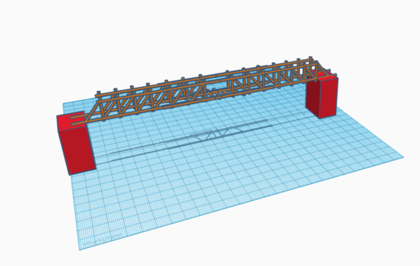
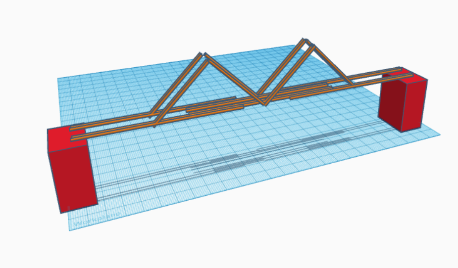

This week we did more work with circuit. This time, we programmed the arduinos that we connected to our breadboards to flash the lights in certain sequences. First, we simply made the LED light blink on and off. Then we made multiple lights blink. After that we had to program the arduino to make the three lights blink in a certain pattern. Lastly, we made the LED light blink when a button was pressed.
*11/28/2022 - 12/2/2022*


This week we started our civil engineering unit. We began our project to build bridges out of only 20 pieces of spaghetti to hold a bucket of water. Our first CAD (1st image) was based off of most of the bridges we found on the internet, including lots of triangles which we know create strong structures. However, it was to fragile because it used too many singular noodles which were too thin when we actually tried making it. So we made a second CAD (2nd image) with each segment having two noodles together to reinforce the structure. It was more simple with less triangles, but we needed to do so in order to make each segment thicker and stronger. We started gluing the model and are waiting for it to dry.